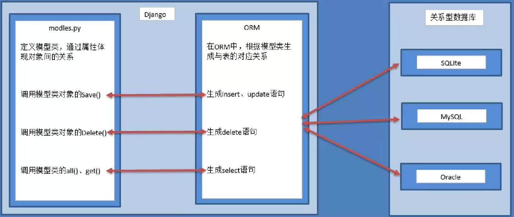

31. 列表合并
两个列表[1,5,7,9]和[2,2,6,8]合并为[1,2,2,3,6,7,8,9]
一开始可能先想到的是 append，但是要了解到，对单个元素，确实是加进去了，如果是整个东西。那么这整个东西算作一个。因为 Python 中的列表是没有元素类型限制的。
list1 = [1, 5, 7, 9]
list2 = [2, 2, 6, 8]
# list1.extend(list2)
list1.append(list2)
print(list1)
out：
[1, 5, 7, 9, [2, 2, 6, 8]]
所以这里应该用 extend，extend 可以将另一个集合中的元素逐一添加到列表中，区别于 append 整体添加。
list1 = [1, 5, 7, 9]
list2 = [2, 2, 6, 8]
list1.extend(list2)
print(list1)
list1.sort(reverse=False)
print(list1)
out：
[1, 5, 7, 9, 2, 2, 6, 8] [1, 2, 2, 5, 6, 7, 8, 9]
32. OS 删除文件
Python 可以跨平台，使用 os 模块就可以了
Python: os.remove(文件名)
Linux: rm
33. Log 日志打印时间
log 日志中，我们需要用时间戳记录 error,warning 等的发生时间，请用 datetime 模块打印当前时间戳 “2018-04-01 11:38:54”
题解中使用的 datetime 模块
import datetime
a = f'{datetime.datetime.now().strftime("%Y-%m-%d %H:%M:%S")} 星期 ： {datetime.datetime.now().isoweekday()}'
print(a)
out：
2019-09-15 12:50:56 星期 ： 7
但是我们在使用 logging 日志的时候，日志本身给我们提供了打印时间的方法。
在 Formatter 参数中
| 参数 | 含义 |
|---|---|
| %(message)s | 用户自定义要输出的信息 |
| %(asctime)s | 当前的日期时间 |
| %(name)s | logger 实例的名称 |
| %(module)s | 使用 logger 实例的模块名 |
| %(filename)s | 使用 logger 实例的模块的文件名 |
| %(funcName)s | 使用 logger 实例的函数名 |
| %(lineno)d | 使用 logger 实例的代码行号 |
| %(levelname)s | 日志级别名称 |
| %(levelno)s | 表示日志级别的数字形式 |
| %(threadName)s | 使用 logger 实例的线程名称（测试多线程时有用） |
| %(thread)d | 使用 logger 实例的线程号（测试多线程时有用） |
| %(process)d | 使用 logger 实例的进程号（测试多进程时有用） |
配合 OS 和 time 模块的时候我们可以自定义 Logger 实例：
import os
import time
import logging
# 1. 创建logger实例，如果参数为空则返回 root logger
logger = logging.getLogger('aiotest')
# 设置总日志级别, 也可以给不同的handler设置不同的日志级别
logger.setLevel(logging.DEBUG)
# 2. 创建Handler, 输出日志到控制台和文件
# 控制台日志和日志文件使用同一个Formatter
formatter = logging.Formatter('%(asctime)s - %(filename)s[line:%(lineno)d] - <%(threadName)s %(thread)d>' + '- <Process %(process)d> - %(levelname)s: %(message)s' )
# 日志文件FileHandler
basedir = os.path.abspath(os.path.dirname(__file__))
log_dest = os.path.join(basedir, 'logs') # 日志文件所在目录
if not os.path.isdir(log_dest):
os.mkdir(log_dest)
filename = time.strftime('%Y-%m-%d-%H-%M-%S', time.localtime(time.time())) + '.log'
# 日志文件名，以当前时间命名
file_handler = logging.FileHandler(os.path.join(log_dest, filename), encoding='utf-8')
file_handler.setFormatter(formatter)
# 设置Formatter
file_handler.setLevel(logging.WARNING)
# 单独设置日志文件的日志级别
# 控制台日志StreamHandler
stream_handler = logging.StreamHandler()
stream_handler.setFormatter(formatter)
# stream_handler.setLevel(logging.INFO)
# 单独设置控制台日志的日志级别，注释掉则使用总日志 级别
# 3. 将handler添加到logger中
logger.addHandler(file_handler)
logger.addHandler(stream_handler)
34. 数据库优化查询的方法
-
建立外键（好像不怎么用？）
-
建立索引
-
联合查询
-
选择特定字段
-
……
35. 绘制统计图的开源库
pychart、matplotlib、Seaborn
36. 自定义异常
def fn():
try:
for i in range(5):
if i > 2:
raise Exception("My Error")
except Exception as ret:
print(ret)
fn()
out：
My Error
37. （.*）和（.*？）的区别
正则表达式中，默认是贪婪匹配的。
加上数量通配符之后若添加？则会取消贪婪匹配。
(.*)是贪婪匹配，会把满足正则的尽可能多的往后匹配
(.*?)是非贪婪匹配，会把满足正则的尽可能少匹配
例子：
import re
s = "<a>哈哈</a><a>哈哈</a>"
res1 = re.findall("<a>(.*)</a>", s)
res2 = re.findall("<a>(.*?)</a>", s)
print(res1)
print(res2)
out：
38. 简述 Django 的 orm
ORM，全拼 Object-Relation Mapping，意为对象-关系映射实现了数据模型与数据库的解耦，通过简单的配置就可以轻松更换数据库，而不需要修改 代码只需要面向对象编程,orm 操作本质上会根据对接的数据库引擎，翻译成对应的 sql 语 句,所有使用 Django 开发的项目无需关心程序底层使用的是 MySQL、Oracle、 sqlite....，如果数据库迁移，只需要更换 Django 的数据库引擎即可

39. 列表推导式的骚操作
[[1,2],[3,4],[5,6]]一行代码展开该列表，得出[1,2,3,4,5,6]
list1 = [[1, 2], [3, 4], [5, 6]]
list2 = [j for i in list1 for j in i]
print(list2)
out：
[1, 2, 3, 4, 5, 6]
使用 Numpy
import numpy as np
list3 = np.array(list1).flatten().tolist()
print(list3)
out：
[1, 2, 3, 4, 5, 6]
flatten 是将所有元素 copy 一份，并且变为一维数组。
40. join()方法
x="abc",y="def",z=["d","e","f"],分别求出 x.join(y)和 x.join(z)返回的结果
x = "abc"
y = "def"
z = ["d","e","f"]
m = x.join(y)
n = x.join(z)
print(m)
print(n)
out：
dabceabcf dabceabcf
join()括号里面的是可迭代对象，x 插入可迭代对象中间（每个都插一遍），形成字符串，结果一致，有没 有突然感觉字符串的常见操作都不会玩了
顺便建议大家学下os.path.join()方法，拼接路径经常用到，也用到了join,和字符串操作中的join有什么区别，该问题大家可以查阅相关文档